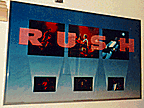
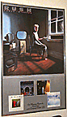
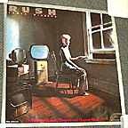
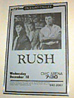

"6-picture spotlight"
36" x 24"
Blue background fading to white at the bottom, with RUSH written in the font
from Power Windows. Three small pictures of the band are at the bottom, with
"spotlights" extending up to three larger pictures, one of each member. All
pictures are concert shots.
|

"power windows album promo"
24" x 36"
Power Windows album cover over top 2/3, bottom 1/3 has small pictures of
Moving Pictures, Exit... Stage Left, Signals and Grace Under Pressure with
"also available" written underneath.
|

"square power windows promo"
24" x 24"
Power Windows album cover, with "On Mercury Records, Cassettes & Compact
Discs" written in pink script at the bottom.
|

"pittsburgh tour date"
23" x 35"
Tour poster for the Pittsburgh Civic Arena, December 18th 1985. Light blue
background with promo shot of the band at the top, with date and venue listed
in black at the bottom.
|